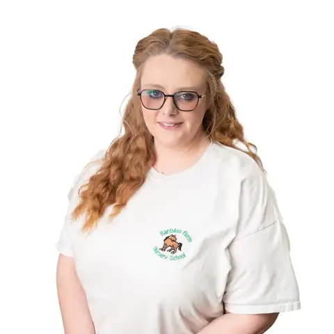
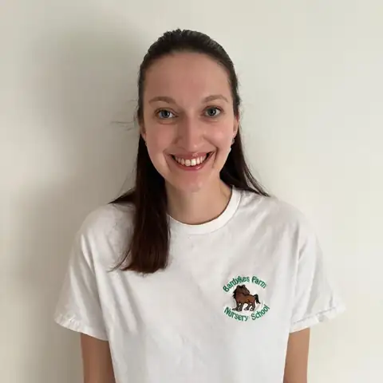
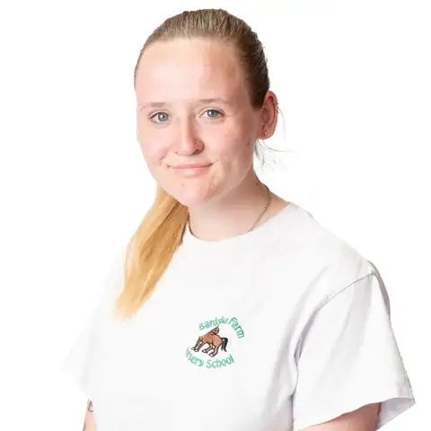
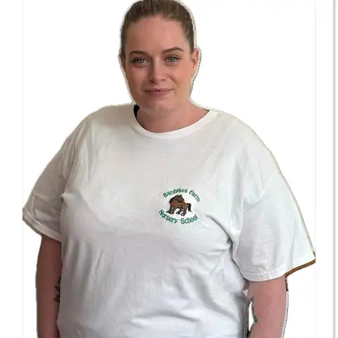
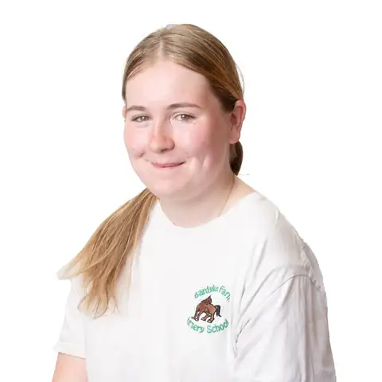
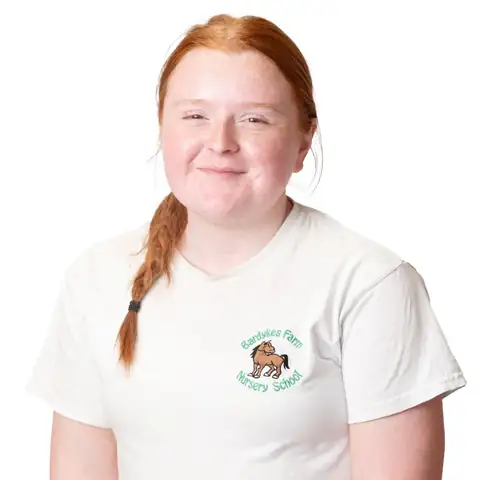
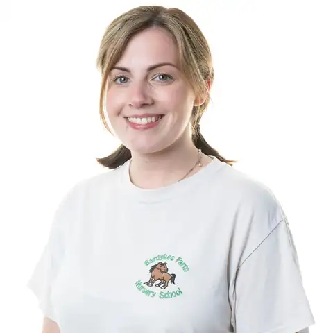
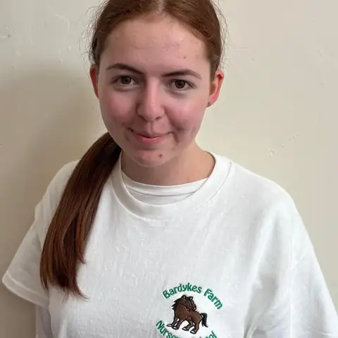
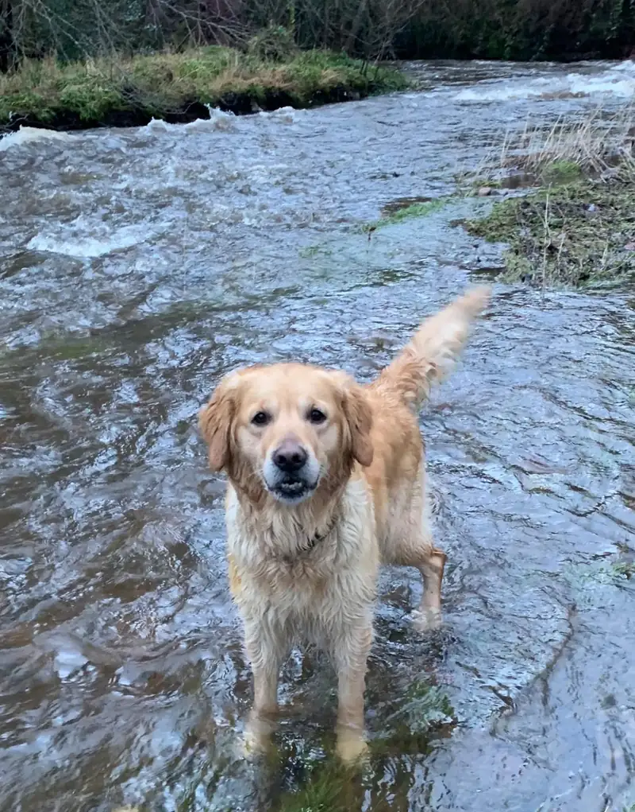

Our team
A small, long-serving team. Every one of us is first aid trained, PVG checked and a member of the SSSC.
Who runs the nursery
Bardykes is owned and run by the Wilkie family.
Mrs Wilkie
Founder
Opened the nursery in 1991. Still leads music and singing.
Kimberley Wilkie
General Manager
Keeps her mum’s dream alive by developing our outdoor spaces.
Katie Peters
Nursery Manager and child protection officer
BA (Hons) Childhood Studies and a Master’s in Early Years. Here since 2016.

Kerstin McKim
Quality and Standards, child protection officer
Over 17 years in early years and social care.
Ruth Haughen-Scott
Nurture Nurse
A nurse specialist. Our first ever pupil, in 1991.
Our practitioners
The people your child will see every day.
Maxine Ross
Expert Practitioner
Here since 1998. HNC in Childcare and Education.

Caitlyn Cree
Lead Practitioner
BA Childhood Practice, University of Strathclyde.

Rebecca Stewart
Lead Outdoor Play Practitioner
HNC in childcare. Call her Becca.
Jodi Patterson
Nursery Practitioner
Joined in 2023 as a Modern Apprentice.
Freyja Torlay
Nursery Practitioner
Loves outdoor learning and child-led play.

Bonnie Hand
Nursery Practitioner
SVQ3 in Early Years. A qualified veterinary care assistant.

Stephanie Reid
Nursery Practitioner
Modern Apprentice with Carousel Training.

Chloe Hendry
Nursery Practitioner
Loves helping children bond with the animals.

Lorena Palazzo
Trainee Nursery Practitioner
Working towards her qualifications.

Cara Mitchell
Trainee Practitioner
Modern Apprentice with Carousel. Loves horses.
Ask us about our staff ratios when you visit.
Key workers
Your child will have a key worker, who gets to know them and their family well. Ask us who it will be when you visit.
Keeping children safe
Our child protection officers are Katie Peters and Kerstin McKim. If you’re worried about a child, talk to one of them.

Work with us
Are you childcare qualified, happy outdoors in all seasons and fond of animals? We’d love to hear from you. We’re also happy to support apprentices.
Email your CV to manager@bardykes.co.uk.